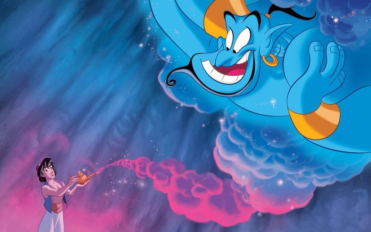

Lampu Ajaib: Sumber Kekuatan dan Keajaiban
Lampu ajaib adalah sebuah benda kuno dan penuh misteri yang menyimpan kekuatan luar biasa di dalamnya. Di dalam lampu ini tinggal jin yang sangat kuat, namun juga lucu dan setia pada pemiliknya. Aladdin menemukan lampu ajaib tersebut secara tak sengaja di dalam gua rahasia yang tersembunyi jauh di gurun pasir Agrabah yang luas dan berbahaya. Jin yang tinggal di dalam lampu memiliki kemampuan ajaib untuk mengabulkan tiga permintaan apa pun dari pemilik lampu,
Lampu ajaib ini menjadi rebutan sengit, terutama oleh Jafar, sang penyihir jahat yang licik dan penuh ambisi. Jafar ingin merebut lampu itu agar bisa menguasai kerajaan Agrabah dan mendapatkan kekuatan mutlak. Ia rela melakukan apa saja, termasuk berbohong dan berkhianat, demi mendapatkan kekuatan tersebut. Namun, Aladdin, dengan hati yang baik dan kecerdikan yang luar biasa, berusaha keras melindungi lampu ajaib ini. Dengan bantuan jin yang lucu dan penuh keajaiban, Aladdin menghadapi berbagai tantangan dan rintangan demi menjaga lampu tetap aman dan menggunakan kekuatannya untuk kebaikan.
Mau tahu bagaimana Aladdin menggunakan lampu ajaib ini? Yuk, lanjut ke halaman petualangan berikutnya!